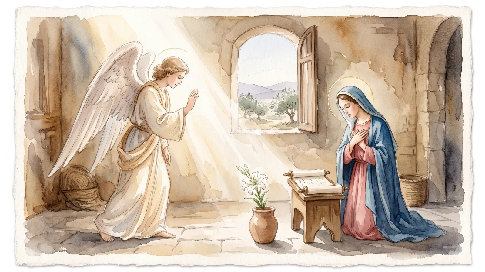
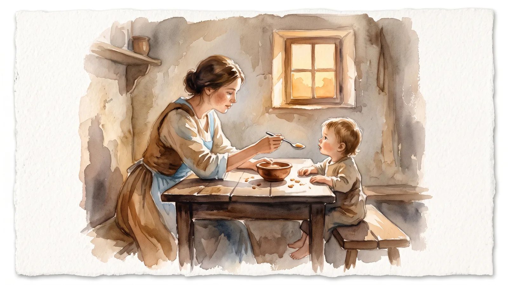
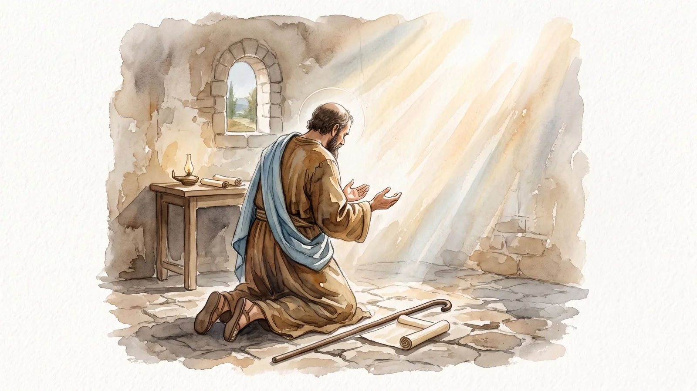
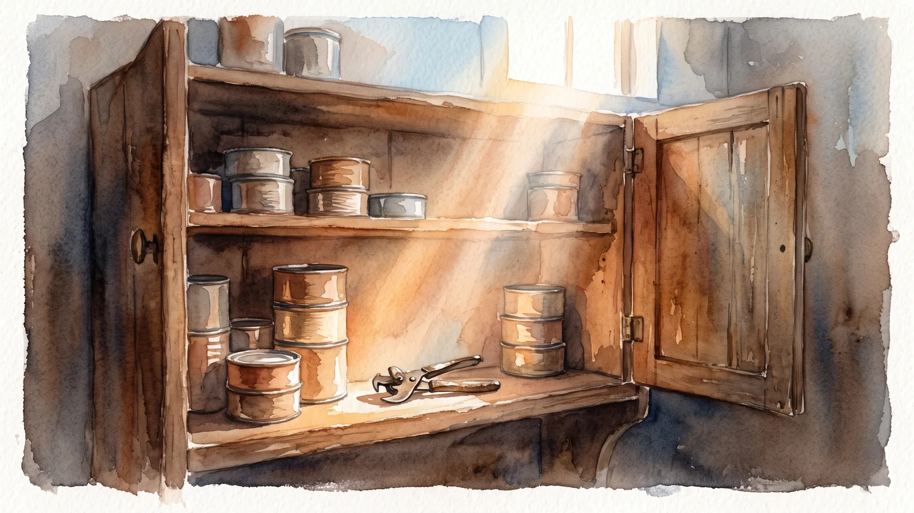
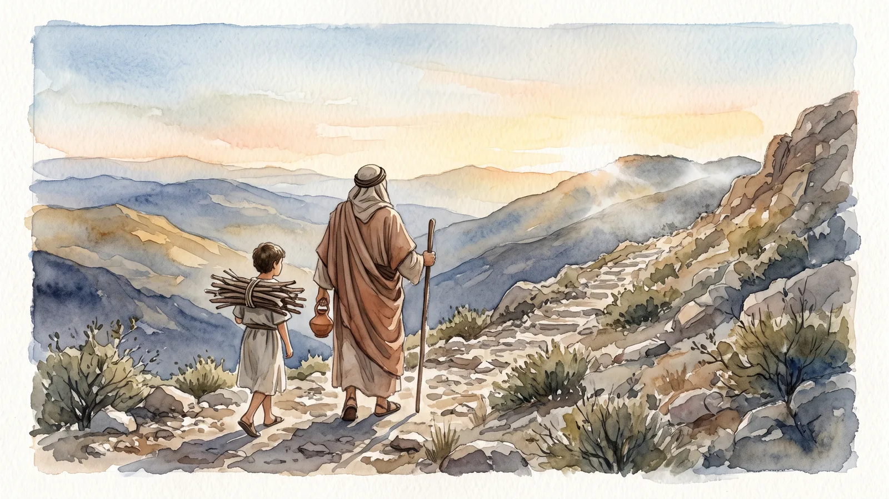
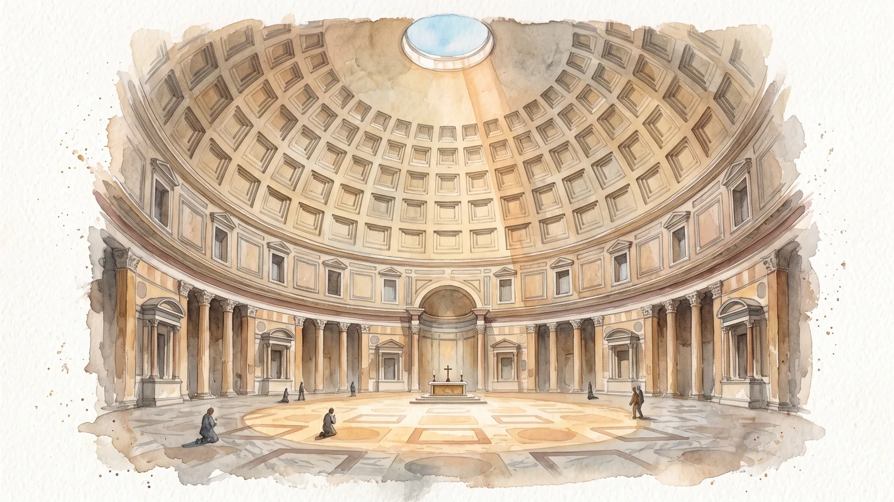
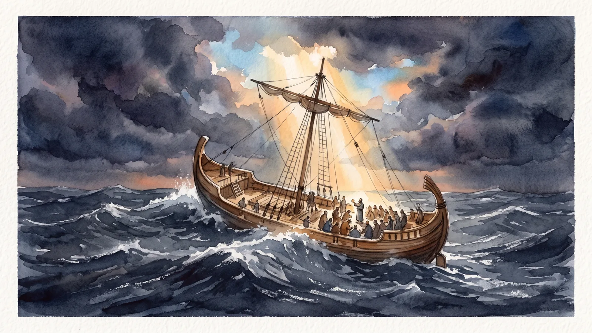
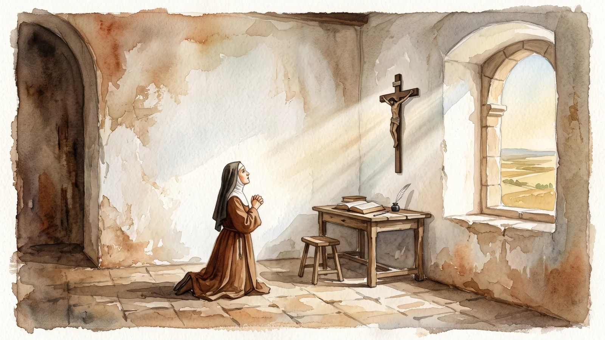
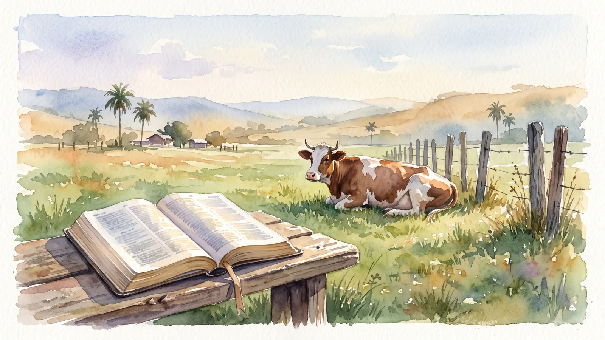
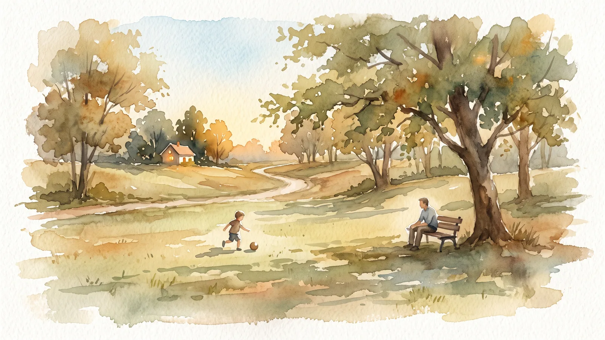

La voz del pastor
La homilía de cada día, puesta por escrito para seguir rezándola en casa.
De martes a domingo, el padre Rafael predica la homilía en la Misa de 6:00 PM. Esa misma noche la encuentras aquí convertida en una breve reflexión, para leerla con calma, volver sobre ella o compartirla con quien la necesite.

Domingo, 25 de octubre de 2026 · Mt 22, 34-40 Recibir la Palabra como María Recibir la Palabra es meterla dentro del corazón. Como María: escuchándola en la oración, en los sacramentos y en comunidad. Sábado, 24 de octubre de 2026 · Mt 22, 34-40 Extranjeros amarrados a la misma cuerda Amar al prójimo como a uno mismo es amarlo porque es extranjero como yo. Somos peregrinos hacia el cielo y nos ayudamos a llegar.
Viernes, 23 de octubre de 2026 · Lc 12, 54-59 El delantal de la humildad La humildad es reconocer que sin Dios no puedo hacer nada. En la cabeza lo sabemos; en el corazón cuesta, y hay que pedirla en la oración.
Jueves, 22 de octubre de 2026 · Lc 12, 49-53 Doblar la rodilla aquí para doblarla en el cielo Doblar la rodilla es reconocer que Dios es más grande y que dependemos de Él. Mejor hacerlo aquí, por amor, que al final por obligación.
Miércoles, 21 de octubre de 2026 · Lc 12, 39-48 Las latas de atún y el abrelatas de la gracia Dios ya nos dio todo para salvarnos, pero sin su gracia no podemos abrirlo. La oración, los sacramentos y la comunidad nos dan esa fuerza. Martes, 20 de octubre de 2026 · Lc 12, 35-38
La paz no es ausencia, es plenitud
Cristo es nuestra paz: no la ausencia de guerra, sino la plenitud y la verdadera felicidad que solo él, el Príncipe de la Paz, puede darnos.
Martes, 20 de octubre de 2026 · Lc 12, 35-38
La paz no es ausencia, es plenitud
Cristo es nuestra paz: no la ausencia de guerra, sino la plenitud y la verdadera felicidad que solo él, el Príncipe de la Paz, puede darnos.

Domingo, 18 de octubre de 2026 · Mt 22, 15-21 No comprendo, pero confío Pedirle cuentas a Dios en el dolor es tentarlo. La oración aumenta la fe y nos enseña a decirle: no comprendo, pero confío.
Sábado, 17 de octubre de 2026 · Is 45, 1. 4-6 Un altar en el corazón, no un panteón «Yo soy el Señor y no hay otro». En el corazón cabe un altar para el único Dios, no un panteón de ídolos que prometen la felicidad.
Viernes, 16 de octubre de 2026 · Lc 12, 1-7 Dios cuenta hasta tus cabellos Quien viene a la iglesia «halándose los pelos» escucha hoy que Dios cuenta cada cabello. La confianza se aprende tratando con él en la Eucaristía y la Palabra.
Jueves, 15 de octubre de 2026 · Lc 11, 47-54 Nuestra felicidad tiene un nombre Con santa Teresa de Ávila, maestra de oración, descubrimos que todo fue creado por Cristo y para él, y que el sentido de nuestra vida es Jesucristo.
Miércoles, 14 de octubre de 2026 · Lc 11, 42-46 Rumiar la Palabra día y noche Como la vaca que rumia sin prisa, estamos llamados a repetir la Palabra de Dios en el corazón hasta que suelte todo su jugo.
Martes, 13 de octubre de 2026 · Lc 11, 37-41 El niño de las delicias de Dios El salmo llama delicia a los mandatos del Señor, y en hebreo delicia es también juego. Esta vida corta es jugar a hacer feliz al Padre.